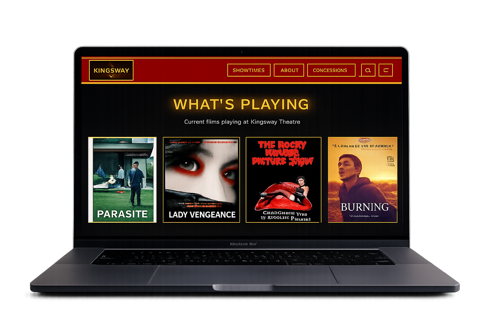

Kingsway Movie Theater – Website Redesign
This website redesign for Kingsway Movie Theater focuses on modernizing the digital
experience while preserving a classic, cinematic atmosphere. The goal of the project
was to create a more accessible and intuitive website that improves usability, visual
hierarchy, and responsiveness across all devices, including desktop and mobile. The
redesign makes it easier for users to browse films, view showtimes, and engage with
the theater’s brand online.
Tools Used: Figma
Team Project: Collaborated with Mirae Lee & Sophia Sengfah
